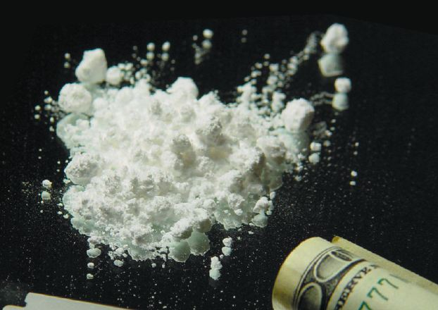

Fixing the Fix
A vaccine for cocaine addiction
Christopher Wu
Spring 2005

Considering the devastating vigor and tenacious grip it has on its
addicts, cocaine can be thought of as an invading pathogen. Researchers
in the fields of immunotherapy and drug addiction have proposed a
rather novel approach to the problem of cocaine addiction by exploiting
an immune response to blood cocaine: a therapeutic cocaine vaccine. The
Xenova Group plc, a United Kingdom based biopharmaceutical company, is
currently testing their product, TA-CD, in Phase II clinical trials.
Despite the ingenuity of a cocaine vaccine, however, there are ethical
concerns about the extent of its applications.
The vaccine being developed by Xenova prevents
cocaine from reaching its primary organ of operation, the brain. By
preventing the drug from reaching the brain, its psychoactive effects
are eliminated altogether, effectively reducing addiction. As a result,
relapses could be prevented because cocaine, even if delivered into the
blood, will not reach the brain and affect its neurobiology. The brain
will be given a chance to detoxify and reach homeostasis, regardless of
how cocaine is administered.
There are many methods of treating cocaine
addiction, ranging from counseling to pharmacotherapy. Naltrexone, for
example, has been approved by the Food and Drug Administration for use
in treating alcoholism and could theoretically be applied to treating
cocaine addiction as well. Naltrexone acts by blocking opiate receptors
from receiving dopamine, a neurotransmitter, and effectively decreases
the activation of the reward circuitry that is stimulated by drug
intake. However, in blocking the endogenous dopamine signaling, it can
exacerbate the withdrawal symptoms characterized by depression.
Preventing entrance to these circuits altogether
would be the simplest and most effective way to prevent relapses for
addicts and addiction for new cocaine users. As Donald Landry, M.D., an
addiction researcher at Columbia University, describes, “It’s
inherently difficult to block a blocker.” Hence, companies such as
Xenova Group plc are developing a therapeutic cocaine vaccine that
addresses the problems of non-specificity and side effects. This
vaccine would act specifically on the cocaine molecules themselves,
leaving the brain’s existing neurochemistry unaffected.
Cocaine molecules, themselves, do not induce an
immune response. Furthermore, they can readily cross the blood-brain
barrier and induce a psychoactive effect. Xenova Group plc has produced
a compound called TA-CD that triggers the immune system to produce
antibodies that specifically bind to blood cocaine. The
cocaine-antibody complex is impermeable to the blood-brain barrier and
does not activate the reward circuitry. As Xenova describes, “The
active ingredient of the TA-CD vaccine is a protein conjugate: a
cocaine derivative coupled to recombinant cholera toxin B (rCTB).
Cholera toxin is needed to trigger the immune response that cocaine
alone will not.” In effect, the response will be cocaine-specific. The
results of the study show that the vaccine is most active between 70
and 90 days after initial vaccination.
Xenova reports that approximately 75 percent of
vaccinated cocaine addicts were able to abstain for three months.
Subjects who had relapsed described a less-pronounced “high” than prior
to the treatment.
An indirect benefit of the vaccine stems from the
fact that compounds that cannot cross the blood-brain barrier also
cannot cross the placental barrier. Simply put, fetuses whose mothers
relapse during pregnancy can benefit from the cocaine vaccination,
thereby reducing the risks of birth defects.
However, there was a dramatic drop in the number of
cocaine specific antibodies after six months and a return to baseline
after one year, signifying that a cocaine vaccination would require
booster shots to maintain levels of the antibody. Furthermore, a study
at Yale University suggests that antibodies can become saturated by
cocaine, and if taken in large enough doses, the vaccine will be
rendered ineffective. Thomas R. Kosten, M.D., the primary investigator
of the Yale study, suggests that the vaccine would be most effective
when applied to patients who are adamant about recovery from addiction.
Because the immunotherapeutic effect can be bypassed by taking large
doses of cocaine, the vaccination would best help those dedicated to
therapy by preventing minor relapses and would unlikely deter addicts
determined to get high.
The results of the Substance Abuse Mental Health
Services Administration’s annual survey in 1997 showed that out of the
three million occasional cocaine users, 1.7 million were addicted, and
only 300,000 sought treatment. In 2003, the results showed that
approximately 2.3 million persons in the United States were current
cocaine users and that an estimated 70 billion dollars is spent
annually fighting cocaine addiction.
Despite the need for more effective methods of
treatment, the cocaine vaccine has come under scrutiny. Moralists
stress the importance of the social context of addiction—a parameter
not often included in trials designed to assess biomedical efficacy and
safety for licensing purposes. Richard Ashcroft, M.D., of the
Department of Primary Health Care and General Practice, Imperial
College London, UK, argues that a cocaine vaccination may tempt
prospective users who normally would be intimidated by the risk of
addiction. Ashcroft says, “With the prospect both of a fast track to
pleasure and a fast track out of addiction, the risk/benefit portfolio
of cocaine and opiates is dramatically altered in favor of benefit.”
Therefore, more people would be tempted to experiment with the drug,
relying on the vaccine as a safety net.
The specific actions of a therapeutic cocaine
vaccine have been shown to be up to 88 percent effective, whereas
previous methodologies of treatment have shown over 50 percent relapse
rates. Moreover, side effects of the vaccine are isolated to mild
fever, mild pain at the site of administration, low incidences of
muscle twitch, and other mild systemic effects. No other adverse
effects have been shown to be associated with the vaccine.
The benefits of a relatively safe, effective, and
highly-specific cocaine vaccine must be considered along with the
negative stigma associated with illicit drug addiction. This novel
approach has been under development for over 10 years, and the positive
data obtained from Phase II clinical trials definitely show promise.
Though it is unlikely that this vaccine will replace other forms of
traditional therapies, the future of a therapeutic cocaine vaccine may
become one of the next great debates in neuroscience.